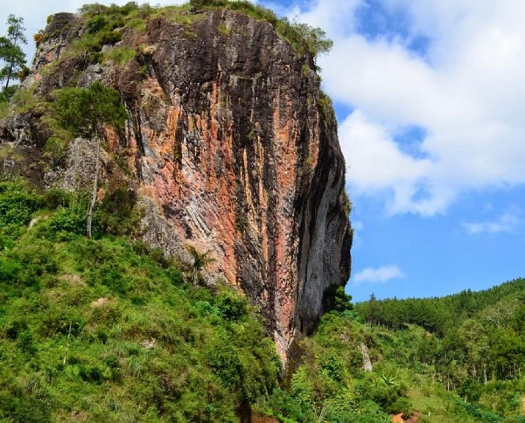

Tentang Kami
Platform TaniGo
TaniGo merupakan platform digital yang bertujuan menghubungkan petani lokal dari Ngrayun, Ponorogo, dengan konsumen di seluruh Indonesia. Kami percaya bahwa pertanian adalah masa depan, dan teknologi adalah jembatannya.
Visi Kami
Menjadi jembatan digital yang memperkuat kesejahteraan petani lokal dan menjadikan pertanian Indonesia lebih berdaya.
Misi
1
Memberdayakan petani lokal dengan akses pemasaran yang lebih luas.
2
Meningkatkan transparansi dan keadilan dalam rantai pasok hasil bumi.
3
Menghubungkan konsumen dengan produk pertanian segar berkualitas langsung dari sumbernya.
Destinasi Wisata

Watu Semaur
selengkapnyaWatu Semaur
selengkapnyaWatu Semaur
selengkapnyaWatu Semaur
selengkapnya